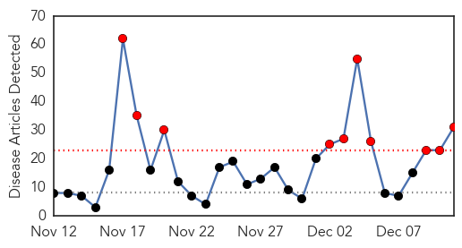
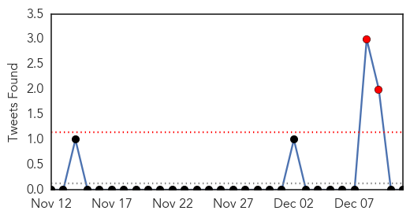
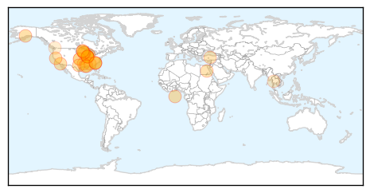
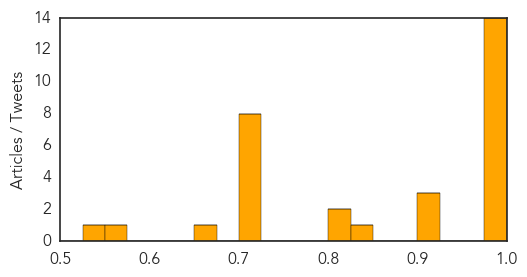
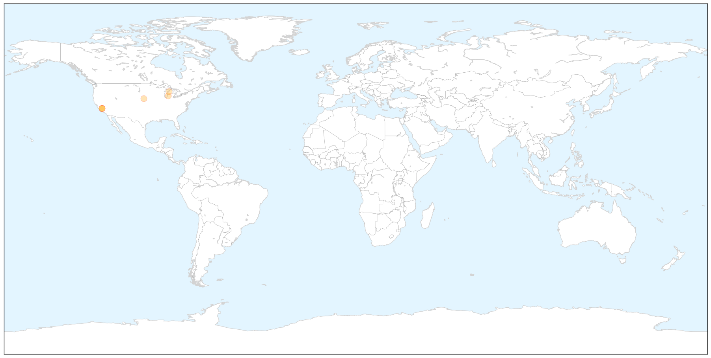

Influenza
30-Day Web Trend
10 alerts, 0 warnings

30-Day Twitter Trend
2 alerts, 0 warnings

Article Locations

Article Confidences
Top Articles:
- 1.000
- Minnesota reports big increase in flu cases
- 1.000
- Health Department encourages people to get flu shots
- 0.998
- Influenza season gains momentum
- 0.996
- Louisiana health officials urge public to get flu shot
- 0.996
- Time to Get Your Flu Shot; Cases Have Tripled
- 0.995
- Juneau Empire - Alaska's Capital City Online Newspaper
- 0.993
- Why this Year’s Flu Vaccine May Make You Sicker
- 0.992
- Flu empties classrooms, fills clinics in southeast Minnesota
- 0.991
- New Interactive Map Predicts Flu Severity In Cities, States — Hot Spots To Avoid
- 0.989
- Dallas Doctor Develops Flu Despite Having Shot
- 0.989
- National Influenza Vaccination Month raising awareness about the flu
- 0.988
- Health professionals strongly encourage flu vaccines as season hits its peak
- 0.984
- Should I get a flu shot this year?
- 0.975
- Flu stats climb as vaccine fails to protect against mutant strai - Live5News.com
- 0.920
- Predicting the flu so you can avoid it
- 0.908
- Teacher dies of bird flu in Egypt's Sohag
- 0.902
- Owatonna teen dies after experiencing flu-like symptoms
- 0.846
- Avian flu at two more BC farms
- 0.812
- Flu outbreak closes parts of Hammond School for another day
- 0.812
- Flu outbreak closes parts of Hammond School for another day
- 0.707
- Debunking Vaccine Myths Can Have An Unintended Effect
- 0.707
- Debunking Vaccine Myths Can Have An Unintended Effect
- 0.707
- Debunking Vaccine Myths Can Have An Unintended Effect
- 0.707
- Debunking Vaccine Myths Can Have An Unintended Effect
- 0.707
- Debunking Vaccine Myths Can Have An Unintended Effect
- 0.707
- Debunking Vaccine Myths Can Have An Unintended Effect
- 0.707
- Debunking Vaccine Myths Can Have An Unintended Effect
- 0.707
- Debunking Vaccine Myths Can Have An Unintended Effect
- 0.660
- Thailand to produce flu, bird-flu vaccine by 2018
- 0.553
- Details Emerge of Canada's Latest Avian Flu Outbreaks
- 0.541
- Health department reminds adults to be current on vaccinations to avoid adult diseases
Top Tweets:
-
No tweets found for Dec 11, 2014
Pertussis
30-Day Web Trend
2 alerts, 0 warnings

30-Day Twitter Trend
0 alerts, 0 warnings

Article Locations

X

Article Confidences

Top Articles:
- 0.919
- California battles whooping cough epidemic
- 0.918
- California battles whooping cough epidemic
- 0.874
- Whooping cough hits Allegan County; Kalamazoo County doctors urged to treat first, confirm later
- 0.868
- Whooping cough cases rise nationally, not locally
- 0.825
- Traverse City disease outbreaks show threat of undervaccination
- 0.611
- California Battling Its Worst Whooping Cough Epidemic In 70 Years « CBS Sacramento
Top Tweets:
-
No tweets found for Dec 11, 2014